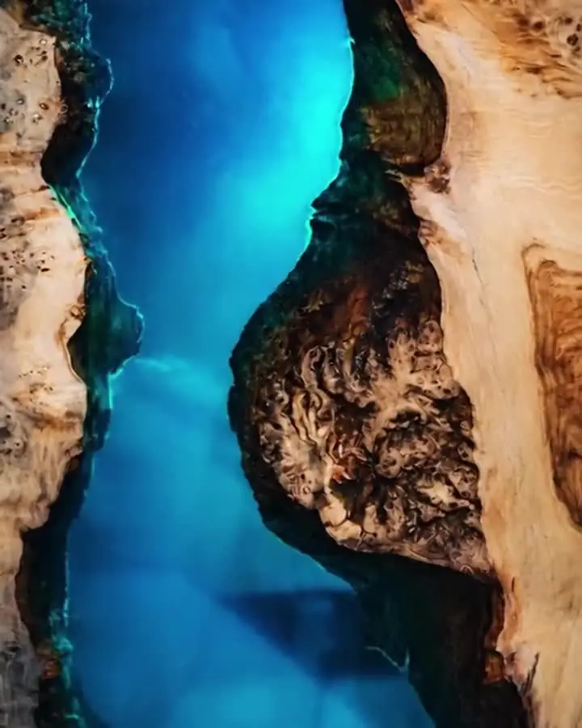
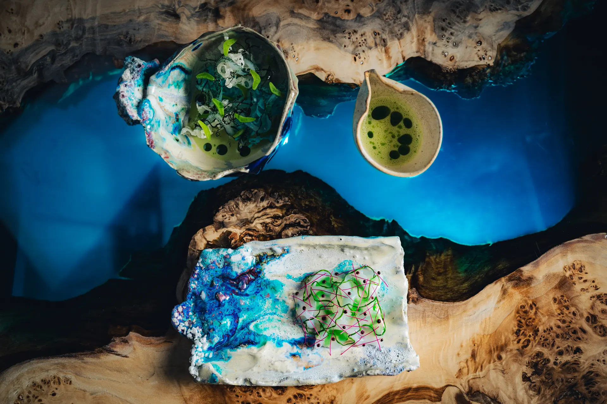
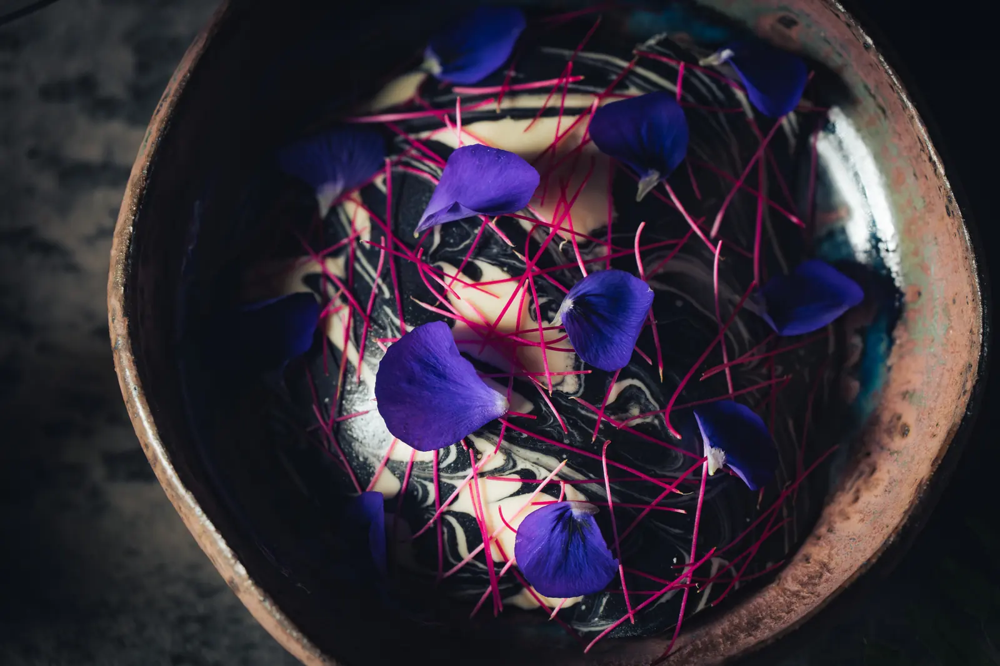
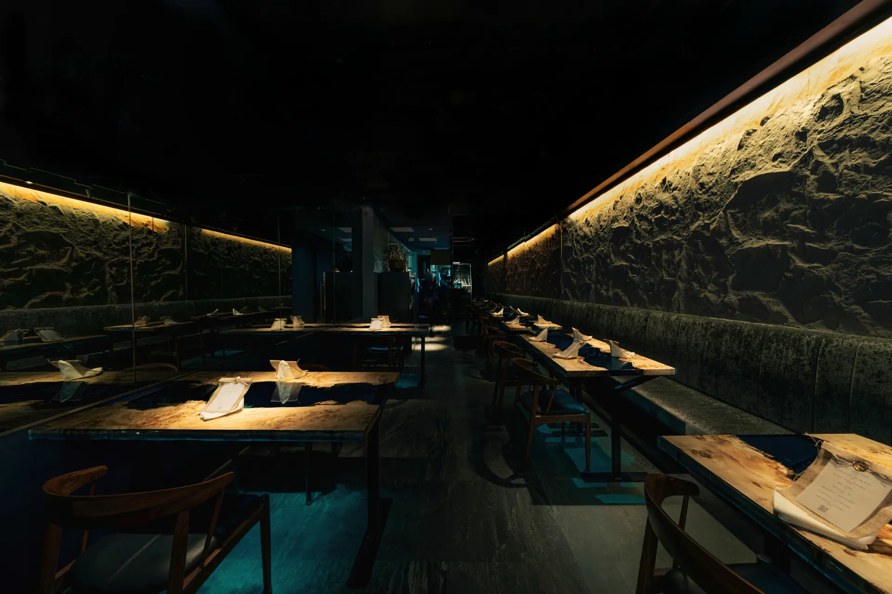
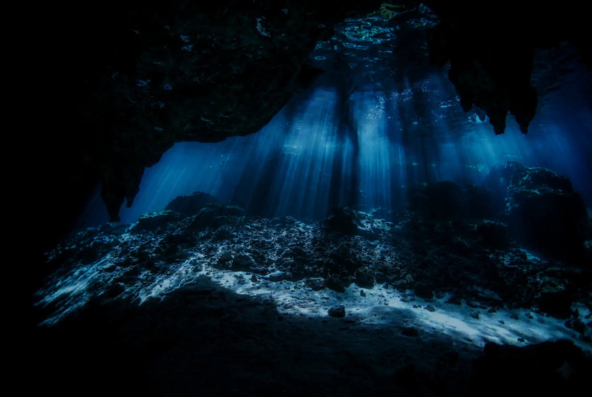

この後ご予定がある方に
ショートコース
5 chapters ・ 全5章
旅のエッセンスを5章に凝縮しました。会食の前後や、お酒を中心に楽しみたい夜に。
¥14,800税込・サ別
このコースで空席を見る
Our Story
外資系の金融を離れたオーナーと、二ツ星レストランの厨房を離れた料理人。
ひとりは、エシカル（倫理的）という考え方を、もっと身近なものにしたかった。
もうひとりは、まだ誰も見たことのない一皿で、新しい価値をつくりたかった。
ETHICAは、その二人が組んで始めた店です。
「エシカル」は正しい言葉ですが、少し遠く聞こえます。
だから私たちは、説明するのではなく、旅をしてもらうことにしました。
過去を振り返り、いまの立ち位置を知り、その先の未来を考える。
そのためのいちばん大きな物差しが、地球の46億年でした。
旅を終えて扉の外へ戻ったとき、見慣れた銀座が少し違って見えたなら。
それが、私たちのいちばんの願いです。
46億年前
まだ海も、生き物もいなかった、燃える星。旅は、ここから始まります。
38億年前
深い海の底、熱い水が噴き出す場所で、最初の生命が生まれたと言われています。
Chapters
コースは古い順には進みません。46億年前から500年前まで、時代を行き来しながら、一皿ずつ地球の記憶を辿ります。目盛りの右は、その章が何皿目に出てくるかです。
ムール貝
戻り鰹
虹鱒
ルクマ
鹿
太刀魚
豚肩ロース
栗
旅の終わりに、コーヒーまたはハーブティーを。
ETHICA コレクション（全8章）の章立てです。食材は季節と仕入れで替わります。

Rebirth
46億年、地球がずっと続けてきたことです。この店も、その物語の一部です。
Courses
迷ったら、いちばん選ばれている「ETHICA コレクション」を。表示は税込・1名の料金です。サービス料10%を別に頂戴します。
この後ご予定がある方に
5 chapters ・ 全5章
旅のエッセンスを5章に凝縮しました。会食の前後や、お酒を中心に楽しみたい夜に。
¥14,800税込・サ別
このコースで空席を見る初めての方に
8 chapters ・ 全8章
地球46億年を、8つの章で旅する。ETHICAの物語をいちばんまっすぐに味わえるコースです。
¥19,800税込・サ別
このコースで空席を見る特別な日に
9 chapters ・ 全9章
希少な食材へアップグレードした、全9章の旅。
¥24,800税込・サ別
このコースで空席を見る

大切な方のお祝いに
9 chapters ・ 全9章 ・ メッセージプレート付き
グランド・コレクションに、お祝いのメッセージプレートを添えて。
¥25,200税込・サ別
このコースで空席を見るヴィーガン対応可
8 chapters ・ 全8章
野菜と果実、きのこで描く、もうひとつの46億年。ヴィーガンやムスリムフレンドリーにも対応します。
¥19,800税込・サ別
このコースで空席を見るペアリング（ワイン・ノンアルコール）もご用意しています。ご希望の方は、ご予約時の「ご要望」欄にお書き添えください。
Plates





Kitchen
ペルー料理の基礎の上に、フランス料理の技法を重ねて、時代の風景を一皿に描きます。ソースが大地の地層になり、器が海の底になる。食べることが、その時代に立つことになるように。
松苗 まさお ／ 二ツ星 MAZ 出身
The Cave


Q&A
スマートカジュアルでお越しください。タンクトップ、短パン、ビーチサンダルはご遠慮いただいています。
ご予約時に、お連れ様の分もあわせてお知らせください。妊娠中などの食事の制限もお書き添えください。
ベジタリアン ETHICA コレクションをご用意しています。ヴィーガンやムスリムフレンドリーにも対応します。
サービス料10%と、ミネラルウォーターチャージとしてお一人様¥980（税込）を頂戴しています。ペアリングは別料金です。
キャッシュレス決済のみです。VISA・Master・JCB・AMEX・Diners、交通系電子マネー・iD・QUICPay がご利用いただけます。
メッセージプレートをご用意できます。誕生日・記念日コースをお選びいただくか、ご予約時にご相談ください。
Access
